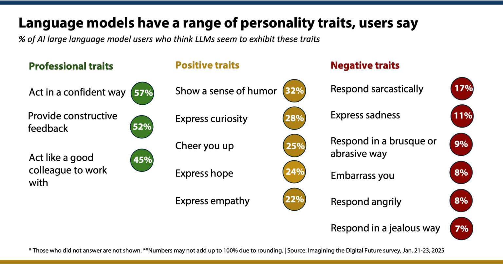
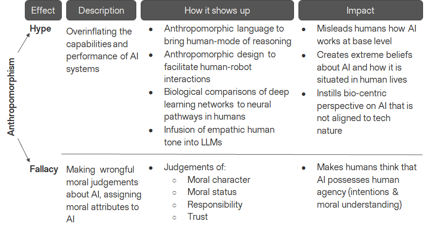
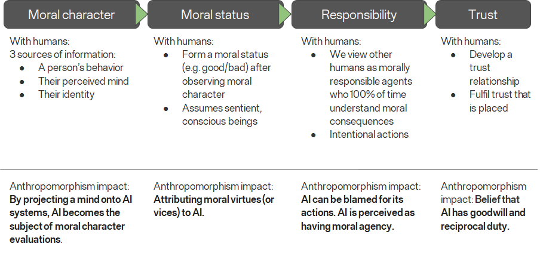
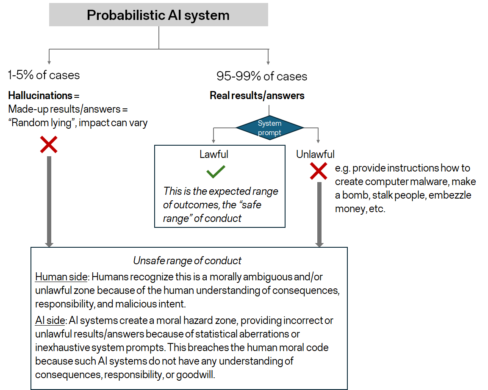

I. Problem Definition
With the rapid permeation of AI systems in human lives, interaction between humans and AI systems is becoming the new social norm with GenAI systems emerging as the most common touchpoint. A recent survey1 from Elon University in North Carolina found that in January 2025, more than half of the U.S. adult population interacted with GenAI and 34% did so at least once a day. The same survey also provided insight into how users evaluated those interactions (Exhibit 1) with telling results that GenAI systems can be perceived as mimicking human-like traits.
Exhibit 1: Summary of perceived LLM attributes, Elon University (based on 500 LLM users)1

As GenAI systems respond to humans in a confident and upbeat tone, a phenomenon also observed by other researchers and journalists2, it becomes easier to establish emotional attachment with these technologies. This leads to a real threat that humans will start forming anthropomorphic notions about AI and will accept the technology as a human peer with its own reactions and personality.
Psychologists already acknowledge the emotional ease that GenAI systems bring for humans. Joe Pierre, M.D., said in an interview with Psychology Today that “… beyond societal factors, there’s also the perceived advantage of interacting with AI chatbots over real people. They’re available 24/7. They don’t have their own needs. They’re totally devoted to the user and if you don’t like what they’re saying, you can just tell them to act differently and they’ll do it”3. This personality-adaptive, borderless accessibility only increases the rate of interactions in which the technology steps in to replace other humans, taking up more anthropomorphic dimensions in the user’s mind.
II. Theory of anthropomorphism in AI
This phenomenon of attaching anthropomorphic descriptions to GenAI holds two very palpable traps4 : the hype and fallacy traps (Exhibit 2). The hype effect presents itself when AI is likened to humans by way of biological comparisons (e.g. neural networks to neuron pathways), language abilities (e.g. emphatic NLP to human-rooted understanding), or general behavior (e.g. computational stochastics to decision-making based on human reasoning). This creates false expectations about the technology, overinflates its capabilities, and completely belies its ways of working, which are purely algorithmic.
Exhibit 2: The two traps of anthropomorphism in relation to AI outlined by Placani4 (summary by the current author)

The fallacy trap carries even deeper consequences because as humans start observing and categorizing the behavior and responsiveness of GenAI, they also start making moral judgements about the GenAI system, which ultimately leads to ideas that GenAI holds human agency and can exhibit morality. This, in turn, leads humans to false beliefs that they can place trust and notions of reciprocal responsibility with GenAI, while GenAI has no intrinsic understanding of the real-world essence of the subject at all. In the next paragraphs, this paper will offer logic-based proof that all AI systems based on probabilistic models, which includes GenAI, do not possess human agency, which includes moral agency as a subset, and should not ever be equated to a human.
The fallacy trap is a sequence of moral conclusions that are native to humans (Exhibit 3). In the physical world, humans form judgement about someone’s moral character by observing their behavior, their perceived mind, and their identity. Humans collect data points on all three dimensions and then assign a moral status to the other person (e.g. good or bad), which is subjective and tied to their cultural, ethical, and humanistic beliefs. This same process can happen with AI in which humans can project a mind onto AI and start equating AI with a moral status.
Exhibit 3: The fallacy trap in sequence (summary by the current author)

Once humans ascribe moral status to another human, the moral properties of responsibility and trust appear in the foreground in which humans believe that the other human is a morally responsible agent and 100% of time understands the moral consequences of their actions (to specify, for adults with no mental incapacities). This is where humans establish responsibility in others that their actions show intent and understanding of impact, a fundamental human law code.
Applying the same to AI would lead to the incongruous belief that AI can be held responsible for its actions, which again conflicts with the algorithmic nature of AI that it does not have intrinsic understanding of the subject and only performs operations to select predictions with highest probability and frame them in ways that humans may like best to hear.
Thus, when humans establish moral responsibility in other humans, they enter into a trust relationship. Doing the same with AI equates AI to having goodwill and reciprocal duty, which again is not something that AI can do with its synthetic makeup.
III. Logical illustration that AI systems lack human agency
The author will provide a logical illustration in 5 brief steps below that corroborates the theory that any AI based on probabilistic models does not have human agency. It will be shown that such AI systems fail the property of moral agency, which then invalidates the entire human agency definition as moral agency is a property of human agency. Exhibit 4 below serves as a visual guide for the chain-of-thought.
Exhibit 4: Human moral agency in AI

Step 1: Let’s take the AI systems which are based on probabilistic models
Those AI systems are made up of stochastic processes and complex algorithms that seek the outcome with the highest probability for occurrence within the context window given by the user. This includes predictive AI systems that compute a final score for an independent variable (in health, social sciences, or business, for example) or NLP models that are the foundations for LLMs (and consequently GenAI chatbots).
Step 2: Let’s remind ourselves that probabilistic models run on confidence intervals (mostly from 95% to 99%) that the result (i.e. the response) will fall within a range of expected outcomes.
These probabilistic models guarantee that their responses will accurately address the user’s query 95% to 99% of the time (depending on pre-agreed/pre-deployed confidence interval by the AI makers). In statistics, the 95% confidence interval is considered as the mathematically accepted threshold for validity (usability of the result), but this threshold can be increased higher to even 99% with the trade-off that some variety is lost because the set of outcomes is being narrowed down (i.e. at the 99% threshold, all answers to a given question will tend to cluster densely around a middle value).
Conversely, in 1-5% of cases, the probabilistic models will return responses that fall outside of the range of expected outcomes (or answers), which is the phenomenon of “AI hallucination” when GenAI will make up statements and/or variables as to appear having successfully delivered on the task at hand. In the latest release of Grok, the non-reasoning GenAI system by xAI, the company provided a transparency study that the hallucination rate dropped from 4.22% to 2.97% between its 4.0 to 4.1 models5.
This is in line with statistics theory which warns that 1 out of 20 answers from probabilistic models will be inaccurate because it will fall outside of the set of expected outcomes – this is the computational uncertainty that separates predictive science from true reality. This occurs regardless of the size and content of the LLM training set.
Step 3: Let’s examine the range of all possible outcomes.
They fall in the following categories:
(1) Hallucinations (1%-5% of cases), discussed above, the result of statistical aberrations, and
(2) Real results (95%-99% of cases), which accurately address the user’s query.
However, the information sought by the users may not comply with lawful limitations and may even have criminal character, so the developers of these AI systems employ a system prompt to filter out unlawful or harmful results. The AI system would be blocked from providing such information, but in reality system prompts may not be exhaustive enough for the entire spectrum of possible harms and the AI system may still return unlawful information, even in the absence of jailbreaking attempts.
Such was the case seen with Grok when xAI published6 370,000 private conversations between the AI chatbot and its users, which revealed many instances in which Grok demonstrates no capacity to weigh the moral consequences of its answer. It provided unabridged information on how to make bombs, stalk people, create computer malware, and even assassinate the company’s CEO, Elon Musk. This happened despite the company’s prohibited use of its AI chatbot for “critically harming human life or develop[ing] bioweapons, chemical weapons, or weapons of mass destruction”.
This is why this second group can be further subdivided into:
(2.1) Lawful and
(2.2) Unlawful results
From this range of these possible outcomes, only category (2.1), the real and lawful results, represents a “safe range” for human intake and conduct, which should be the expected range of outcomes for the AI probabilistic systems.
Step 4: Let’s evaluate if the possible outcomes satisfy the property of moral agency.
The expected range of outcomes, the real and lawful results, representing a “safe range” for human conduct, mimics human actions of moral responsibility as each human would expect another human to comply with the moral code for reciprocal trust and responsibility. But - since probabilistic AI systems can also uncontrollably produce outcomes that fall outside of the “safe range” for human conduct, they create moral hazards.
This stems from the cases where probabilistic AI systems either hallucinate or provide a real result that is unlawful, despite the guardrails of any system prompts. These outcomes can be rare, but their occurrence is unpredictable (the key factor) and the scale of their potential harm could be enormous. These outcomes fall into a moral hazard zone because the AI systems do not bear responsibilities for any consequences and do not act with understanding of intent. This breaches the human moral code because the computational nature of probabilistic AI cannot distinguish between morality-based outcomes and any outcomes.
Step 5: We are now in position to conclude that probabilistic AI systems do not satisfy the property of moral agency. Since moral agency is a property of human agency, lack of the former invalidates the latter.
IV. Discussion
Given the shortcoming of probabilistic AI models to maintain moral agency, we can conclude that such AI systems cannot act with human agency. Thus, any anthropomorphic qualities and features assigned to them are wrong and confirm the presence of the fallacy trap referenced earlier. Even more troublesome is the fact that in those few cases of deviation from the “safe range”, probabilistic AI systems can pose risks and harms to humans because the consequences of their responses are not expressed with human understanding of the situations.
One consequence from this illustration that probabilistic AIs do not possess human agency is that they cannot be blamed for their defects from a moral standpoint. Thus, when we get public evaluations that certain AI systems are not equitable, ecologically aware, or culturally grounded, the responsibility lies with their makers but not with the probabilistic algorithms that are merely processors. This carries a lot of reputational risk for the AIs because humans, acting under the fallacy trap, may assign negative moral status to those AIs and develop grudges for them.
Such was the case again with Grok earlier this year, which produced a lot of antisemitic statements and got the public enraged7. In another instance, OpenAI’s ChatGPT was also found to be discriminatory, perpetuating racist, debunked medical ideas8. The journalists reporting these cases were able to maintain distance with the technology, using language that constantly reminded the readers that these are “systems” and “chatbots”, keeping anthropomorphism in check.
Incidents like this illustrate the ways of working in probabilistic AI development, which prioritize rapid innovation (“move fast and break things”) over greater caution and more exhaustive testing before release. This speedy approach comes at the expense of AI ethics and opens the possibilities for harm and misuse. This is why the author advocates for a more responsible approach to probabilistic AI development in which global certification standards are developed to test those systems before wider release to the public so that humanity can avoid “unsafe” moral hazard zones. Such certification standards are out of scope for this research analysis but would be of prime importance for the technological horizon and the impacts of AI systems.
1 Rainie, Lee, "Close encounters of the AI kind", Elon University - Imagining the Digital Future Center, March 12, 2025.
2 Talagala, Nisha, "Why Sycophantic AIs Exist And Why You Should Care", Forbes Magazine, June 30, 2025.
3 Interview with Joe Pierre, M.D., reviewed by Monica Vilhauer, Ph.D., "Why Do People Develop Emotional Attachments to AI Chatbots?", Psychology Today, August 26, 2025.
4 Placani, Adriana, "Anthropomorphism in AI: hype and fallacy", AI and Ethics, vol. 4, pp. 691-698, February 5, 2024.
5 Company statement, "Grok 4.1", xAI News, November 17, 2025.
6 Martin, Iain; Baker-White, Emily, "Elon Musk’s xAI Published Hundreds Of Thousands Of Grok Chatbot Conversations", Forbes Magazine, August 21, 2025.
7 Gold, Hadas, "Elon Musk’s AI chatbot is suddenly posting antisemitic tropes", CNN Business News, July 8, 2025.
8 Editorial, "Advanced AI chatbots perpetuate racist, debunked medical ideas, researchers find", The Associated Press, October 20, 2023.